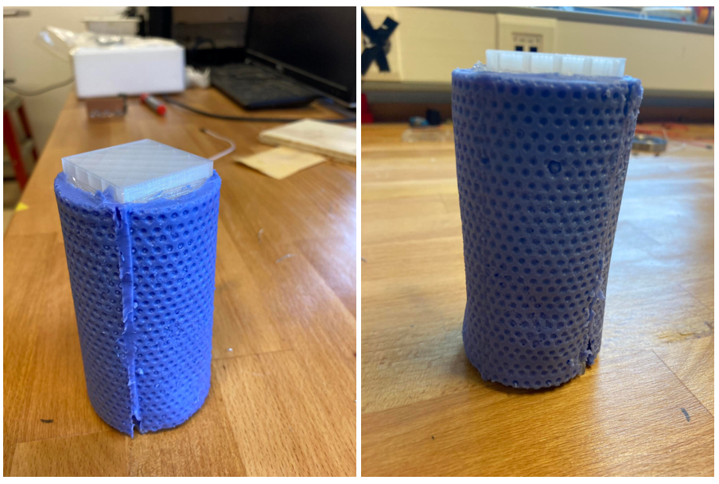

Lokaverkefni
Hlekkur inn á sameiginlegt vefsvæði (klikka hér!!!!!!!)
Mitt hlutverk í stuttu máli
Ég vann þetta verkefni með Inga Þór Ólafssyni og Leon Inga Stefánssyni. Verkefnið var unnið samhliða námskeiðinu "Tölvustýrður vélbúnaður" og fólgst í því að gera silíkon hulsur með gólfkúlu mynstri sem færi á sívalninga á vindmyllu sem nýtir sér magnúsar áhrifin til þess að fanga afl úr vindinum. Hér að ofan sést vindmyllan í allri sinni dýrð. Hulsurnar áttu svo að fara yfir gráu sívalninganna að ofan.  Eins og kemur fram á Trello-inu okkar að þá var minn þáttur í verkefninu aðallega fólginn í því að vera almennt að teikna og ákvarða hönnunina hlutnum okkar, samhliða Inga og Leon. Svo tók ég það að mér að búa til einblöðunginn og að ákveða hönnunarvernd (FAB!). Svo (þótt það kemur ekki fram á Trello-inu) var ég líka mikið með Inga að klippa myndbandið okkar. Auk þess var ég auðvitað með hópnum mínum að vinna í sameiginlega vefsvæðinu okkar. Leon og Ingi voru aðallega að setja upp fræsinguna en ég var með þeim að reyna að láta silíkonið koma betur út úr mótunum. Því miður kom þetta ekki út eins og við vorum að vona en þetta var mjög lærdómsríkt ferli (Skoða hlekkinn fyrir fulla lýsingu á verkefninu!!!!!!!!).